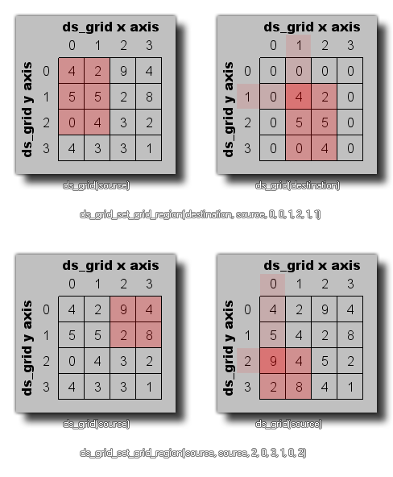

ds_grid_set_grid_region(index, source, x1, y1, x2, y2, xpos, ypos);
| Argument | Description |
|---|---|
| index | The index of the destination grid. |
| source | The index of the source grid. |
| x1 | The left position of the region of cells to copy from the source grid. |
| y1 | The top position of the region of cells to copy from the source grid. |
| x2 | The right position of the region of cells to copy from the source grid. |
| y2 | The bottom position of the region of cells to copy from the source grid. |
| xpos | The x position on the destination grid to copy the source region to. |
| ypos | The y position on the destination grid to copy the source region to. |
Returns : N/A
This function can be used to copy the contents of a rectangular area of grid cells from one (previously defined) ds_grid to another, or it can be used to copy a region from within the same grid. The following images
illustrate both ways that this function can be used:

ds_grid_set_grid_region(t_grid, grid, 0, 0, 5, 5, 10, 10);
This would copy the region of cells from (0,0) to (5,5) of the grid indexed in the variable "t_grid" and copy them to position (10,10) in the grid indexed in the variable "grid".